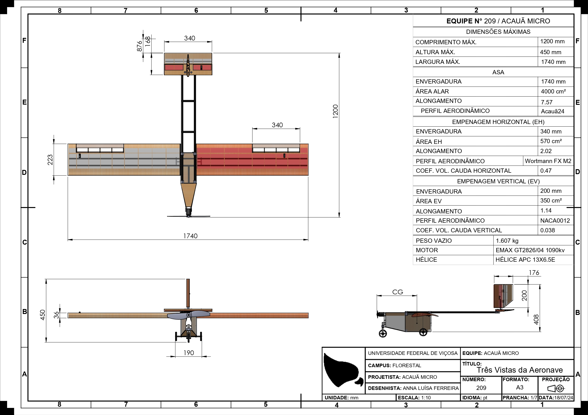
Entendendo o comportamento aerodinâmico com a
visualização de dados
E também economizar milhões em combustível.
Aerodinâmica e Coeficientes Aerodinâmicos
Ela muda tudo. E ela está em tudo.
(KPMG) Comparação da aerodinâmica de um caça militar com um avião comercial.
E não é só sobre aviões. Mas hoje, falaremos de aviões.
Entendendo comportamentos da aerodinâmica por meio de visualizações.

Lista de Símbolos
| Símbolo | Significado |
|---|---|
| CL | Coeficiente de Sustentação (3D) |
| CD | Coeficiente de Arrasto (3D) |
$color
[1] "primary"
$value
[1] "2.26" "0.44" "1.06"$color
[1] "primary"
$value
[1] "14.6°" "14.8°" "11.2°"$color
[1] "primary"
$value
[1] "20.34"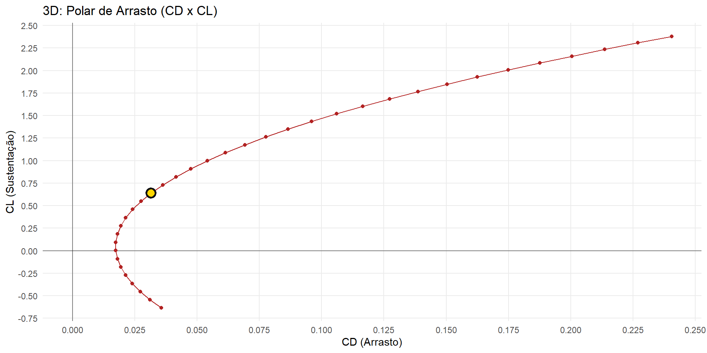
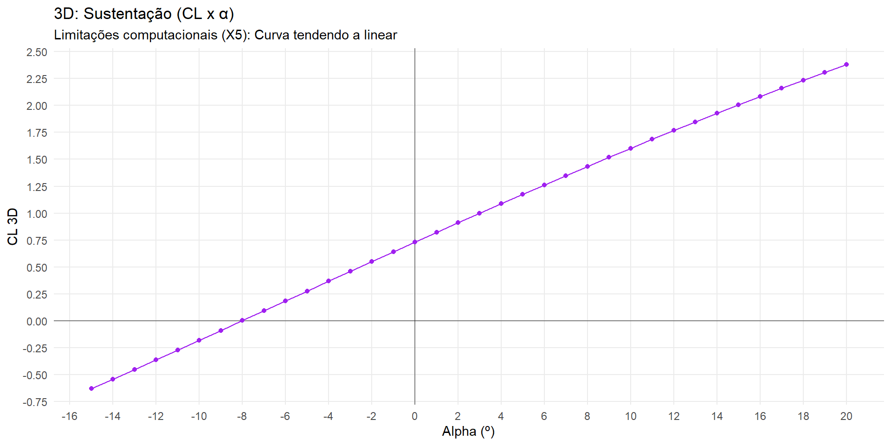
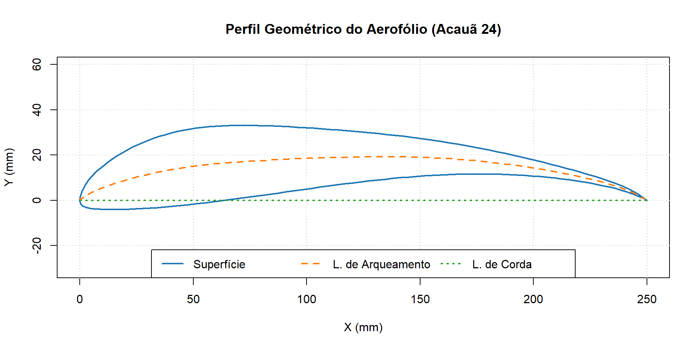
Lista de Símbolos
| Símbolo | Significado |
|---|---|
| Cl | Coeficiente de Sustentação (2D) |
| Cd | Coeficiente de Arrasto (2D) |
| α | Ângulo de Ataque |
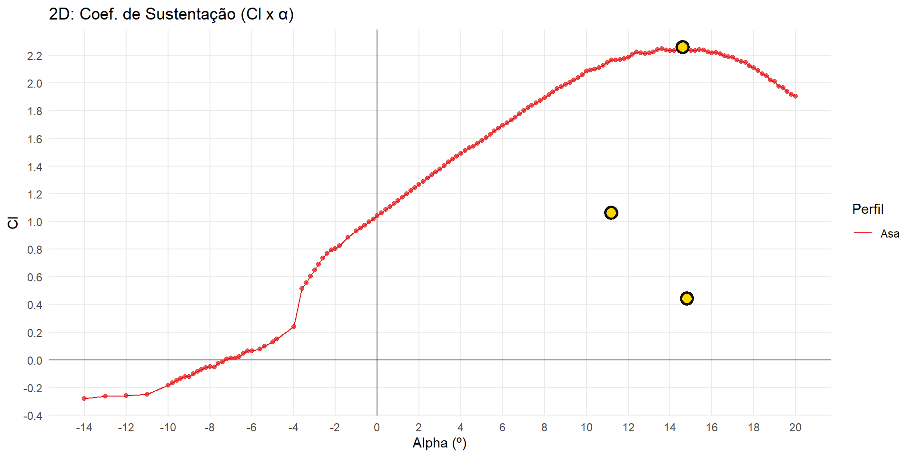
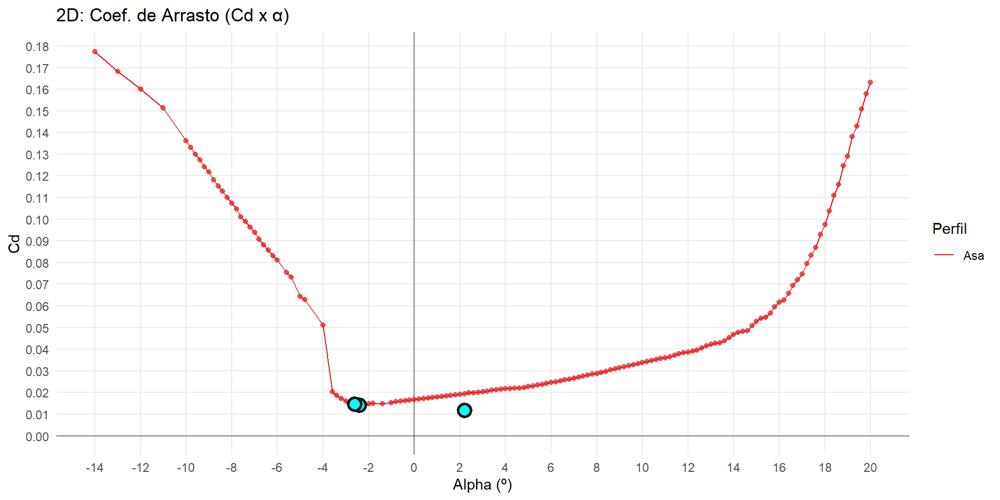
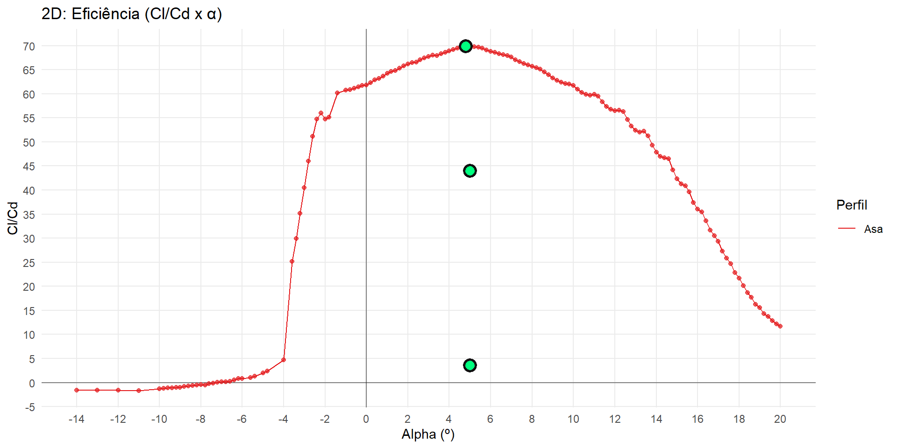
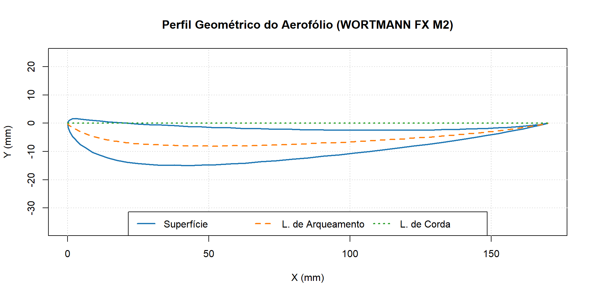
Lista de Símbolos
| Símbolo | Significado |
|---|---|
| Cl | Coeficiente de Sustentação (2D) |
| Cd | Coeficiente de Arrasto (2D) |
| α | Ângulo de Ataque |
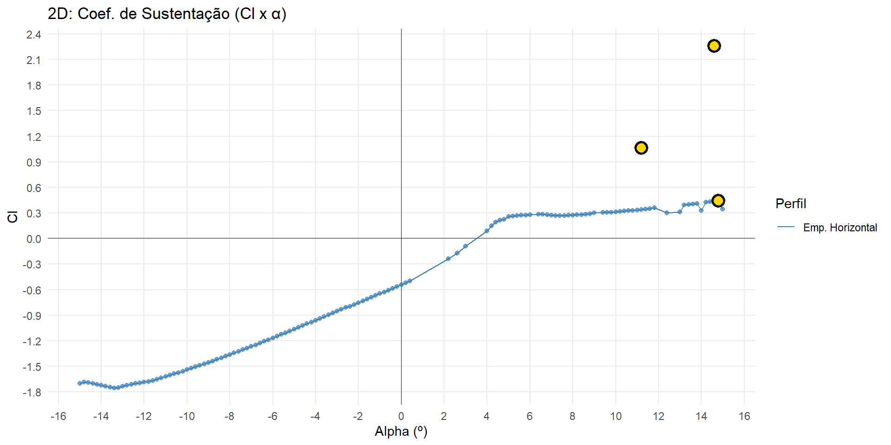
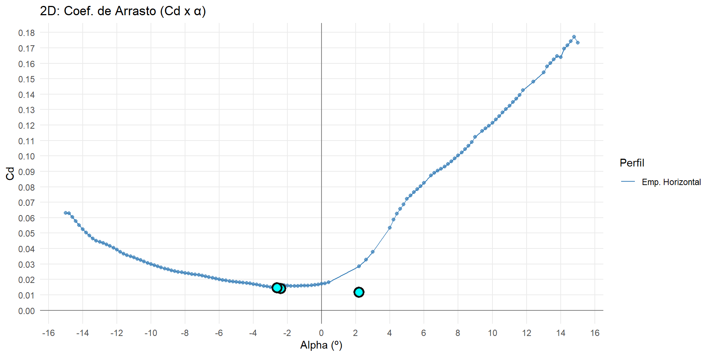
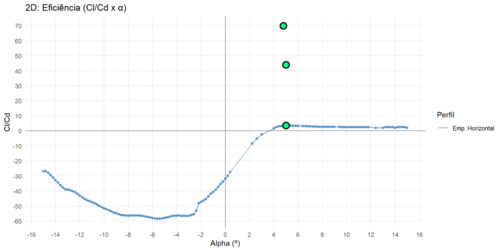
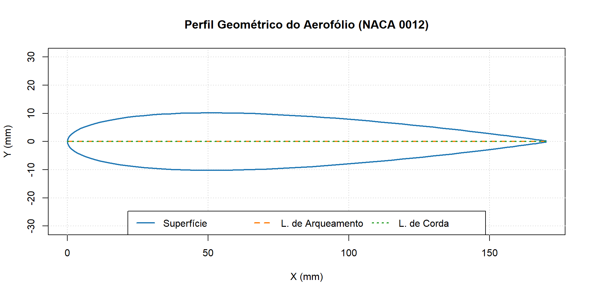
Lista de Símbolos
| Símbolo | Significado |
|---|---|
| Cl | Coeficiente de Sustentação (2D) |
| Cd | Coeficiente de Arrasto (2D) |
| α | Ângulo de Ataque |
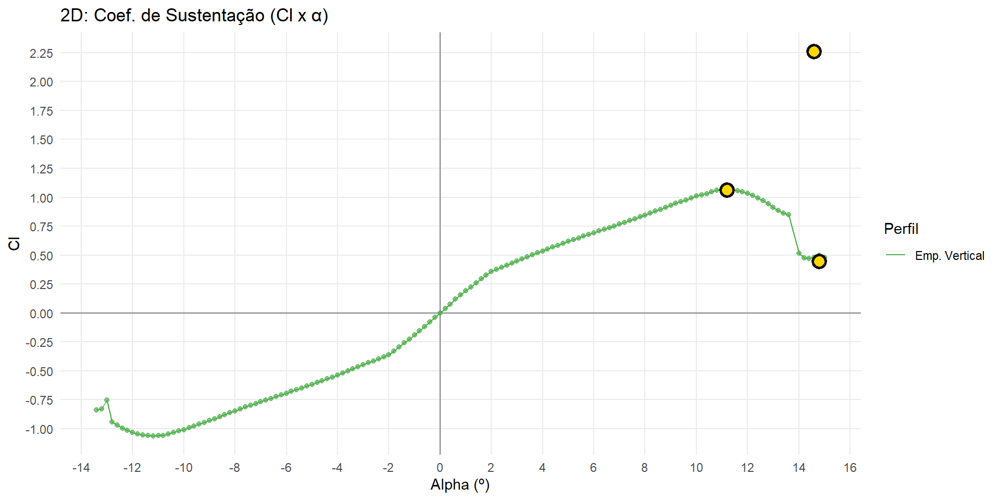
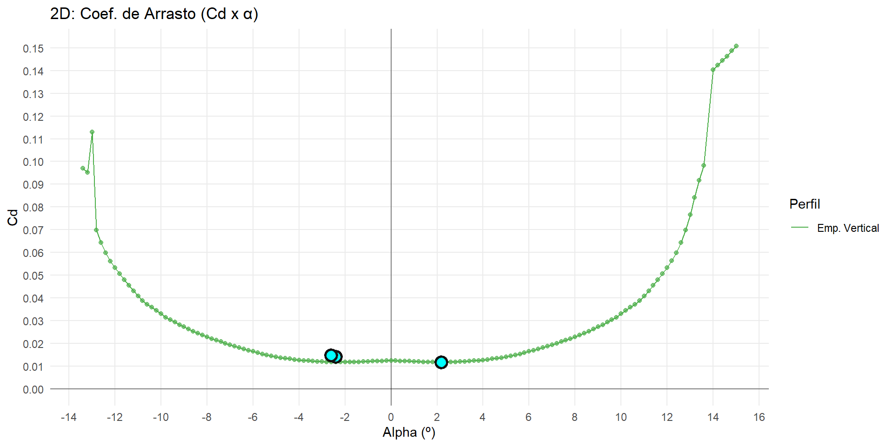
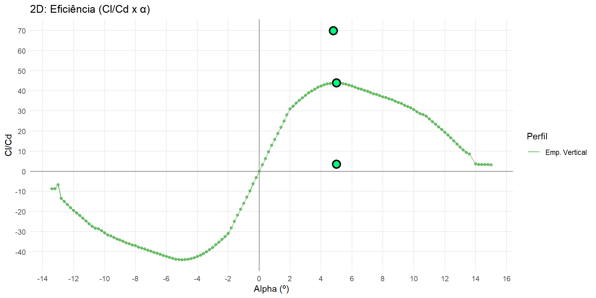
Então com isso concluimos que […]
20260531 https://kpmg.com/de/de/themen/geopolitics/luft-und-raumfahrt-verteidigungsbranche.html?utm_source=chatgpt.com